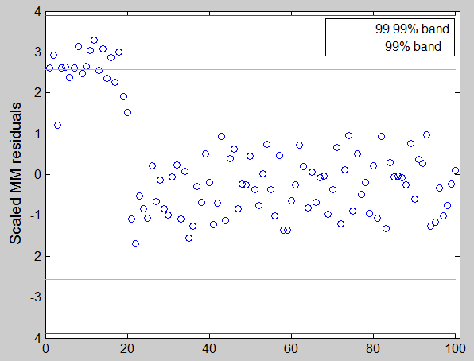
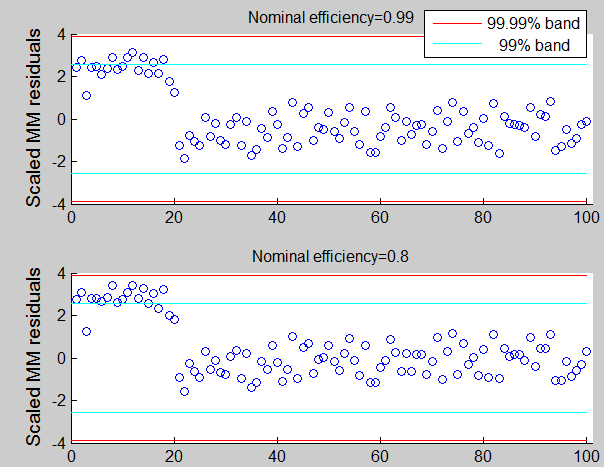

| Flexible Statistics Data Analysis Toolbox™ |
|
MM estimators in linear regression (using starting values provided by the user)
[out] = MMregcore(y,X,b0,auxscale)
[out] = MMregcore(y,X,,b0,auxscale,param1,val1,param2,val2,...)
[out] = MMregcore(y,X,b0,auxscale) computes MM estimators in linear regression using starting values specified by the user. The default nominal efficiency which is used is 95%.
y is a vector of length n containing the response values, X is the n-by-p-1 matrix which contains (in the columns) the values of p-1 predictive terms, b0 is p x 1 vector containing initial estimate of beta (generally an S estimate with high breakdown point (eg .5), auxscale is a scalar containing the estimate of the scale (generally an S estimate with high breakdown point (eg .5) .
[out] = MMregcore(y,X,b0,auxscale) returns the following information
beta − p-by-1 vector of beta MM coefficient estimates, including the intercept when input options intercept is equal to 1 or it is missing. out.beta=[intercept slopes].
residuals − n-by-1 vector containing the scaled residuals from the MM loop. out.residuals=(y-X*out.beta)/out.auxscale
weights − n-by-1 Boolean vector containing weights for each observations. The elements of this vector lie in the interval 0 or 1. Elements close to 0 values are associated with the outliers.
Sbeta − p-by-1 vector of beta S coefficient estimates, including the intercept when input options intercept is equal to 1 or it is missing.
outliers − this output is present only if conflev has been specified. It is a vector containing the list of the units declared as outliers using confidence level specified in input scalar conflev
conflev − confidence level which is used to declare outliers. Remark: scalar out.conflev will be used to draw the horizontal lines (confidence bands) in the plots
class − string containing 'MM'
y − Response vector y. The field is present if option yxsave is set to 1.
X − Data matrix X. The field is present if option yxsave is set to 1.
|
Note MMregcore automatically includes a constant term in all models. Do not enter a column of 1s directly into X. |
[out] = MMregcore(y,X,param1,val1,param2,val2,...) specifies one or more of the name/value pairs described in the following table.
| Parameter | Value |
|---|---|
| 'intercept' |
If 1, a model with constant term will be fitted (default) else no constant term will be included. |
| 'eff' |
scalar defining nominal efficiency (i.e. a number between |
| 'effshape' | dummy scalar. If effshape=1 efficiency refers to shape efficiency else (default) efficiency refers to location. |
| 'refsteps' |
scalar defining maximum number of iterations in the MM loop. Default value is 100 |
| 'reftol' |
scalar controlling tolerance in the MM loop. Default value is 1e-7 |
| 'conflev' |
Scalar between 0 and 1 containing confidence level which is used to declare units as outliers. Usually conflev=[0.95, 0.975, 0.99] (individual alpha) or [1-0.05/n, 1-0.025/n, 1-0.01/n] (simultaneous alpha). Default value is 0.975 |
| 'plots' |
Scalar. If plots=1 a plot with robust residuals is produced else (default) no plot is produced. |
| 'nocheck' |
Scalar. If nocheck=1 no check is performed on matrix y and matrix X. Notice that y and X are left unchanged. In other words the additional column of ones for the intercept is not added. As default nocheck=0. The controls on h, alpha and nsamp still remain. |
| 'yxsave' |
scalar that is set to 1 to request that the data y and X are saved into the output structure out. Default is 0, i.e. no saving is done. |
In these examples we use the same data which have been used in the help of function FSR and LXS in order to compare the output of different procedures.
state=543;
randn('state', state);
n=100;
X=randn(n,3);
bet=[3;4;5];
y=3*randn(n,1)+X*bet;
y(1:20)=y(1:20)+13;
For outlier detection we consider both the nominal individual 1% significance level and the simultaneous Bonferroni confidence level.
% Define nominal confidence level conflev=[0.99,1-0.01/length(y)]; % Define number of subsets nsamp=3000; % Define the main title of the plots titl=''; % S estimators [outS]=Sreg(y,X,'nsamp',nsamp,'conflev',conflev(1)); eff=0.95; outMM=MMregcore(y,X,outS.beta,outS.scale,'eff',eff) titl=['Nominal efficiency=' num2str(eff)]; laby='Scaled MM residuals'; resindexplot(outMM.residuals,'title',titl,'laby',laby,'numlab','','conflev',conflev)

The purpose of the code below is to analyze how the residuals change if we use a different level of nominal efficiency.
eff=0.99; outMM=MMregcore(y,X,outS.beta,outS.scale,'eff',eff) laby='Scaled MM residuals'; h1=subplot(2,1,1); titl=['Nominal efficiency=' num2str(eff)]; resindexplot(outMM.residuals,'h',h1,'title',titl,'laby',laby,'numlab','','conflev',conflev) eff=0.8; outMM=MMregcore(y,X,outS.beta,outS.scale,'eff',eff) laby='Scaled MM residuals'; h2=subplot(2,1,2); titl=['Nominal efficiency=' num2str(eff)]; resindexplot(outMM.residuals,'h',h2,'title',titl,'laby',laby,'numlab','','conflev',conflev)

|
|
mmreg.html | mscale.html |
|